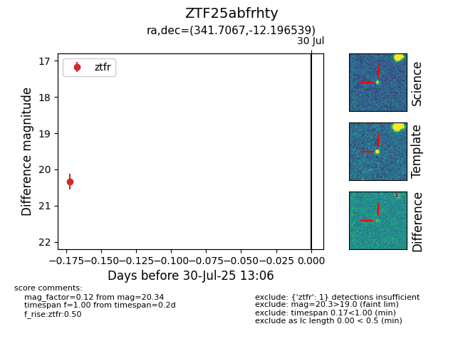

Target ZTF25abfrhty at 2025-07-30 13:06, see:
FINK: fink-portal.org/ZTF25abfrhty
Lasair: lasair-ztf.lsst.ac.uk/objects/ZTF25abfrhty
ALeRCE: alerce.online/object/ZTF25abfrhty
alt names
ZTF25abfrhty (ztf,fink)
coordinates:
equatorial (ra, dec) = (341.7067,-12.19654)
galactic (l, b) = (53.8623,-57.22322)
photometry
last ztfr=20.34
1 ztfr detections
